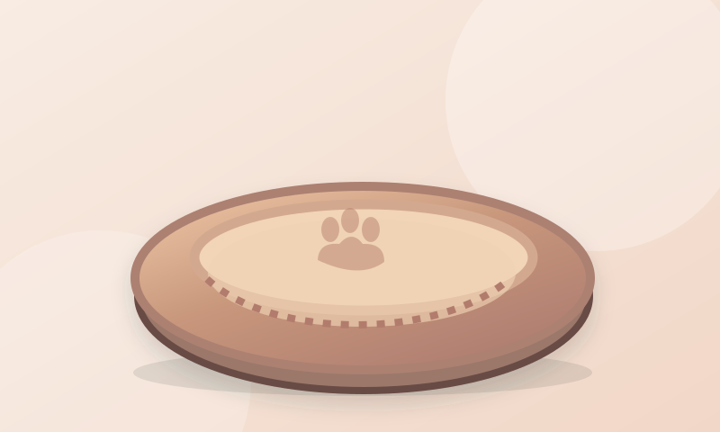

01
Check the intended use
Ask for dimensions, target animal size and load-relevant construction details. A visually similar product may have different specifications.
Explore everyday pet accessories, compare the specifications that matter, and prepare a clearer request before approaching manufacturers.
For importers, retailers and independent pet brands — not a shop or verified supplier directory.

Six representative product types, with practical questions to include in an RFQ. No stock, prices or certification claims.
No matching references. Try a different keyword or category.
Original editorial illustrations are examples only; they are not photos of a specific supplier's stock.
Product decisions depend on intended species, animal size, materials, construction and destination market.
Ask for dimensions, target animal size and load-relevant construction details. A visually similar product may have different specifications.
Identify materials, coatings, cleaning instructions, testing scope and the actual model referenced by each report.
Confirm opening dimensions, ventilation, closures and destination-specific requirements before ordering; transport rules vary.
Create a bilingual brief, highlight incomplete details, then copy or save a text file locally. No upload, email or supplier contact.
Reviewed 29 October 2026. Starting points for ordinary accessories; verify rules for the actual product and destination.
There is no universal CPSIA certificate for every pet accessory. Identify applicable product rules, materials, intended users and claims; request model-specific test evidence and traceability.
CPSC: testing & certification ↗Determine GPSR applicability for consumer-intended or foreseeable consumer use. Where applicable, address safety, documentation, traceability and economic-operator details. A B2B shipment is not an automatic exemption.
EU: General Product Safety Regulation ↗IATA does not certify or approve particular pet containers. Confirm the exact dimensions, animal fit, route, aircraft and travel mode with the operating airline. Generic airline-approved labels are insufficient.
IATA: traveling with pets ↗For UK, Canada or Australia, verify the exact product against the relevant national rules. No product safety, certification, import clearance or legal advice is provided.
PetSupplyHub is an early PENG Nexus research prototype. We do not sell products, provide verified supplier listings, certify merchandise, or accept procurement orders. All specifications must be confirmed with the actual manufacturer and applicable market authorities.
Food, medicine and veterinary devices are outside this first edition. Nothing here is medical, veterinary, engineering or legal advice.
Your RFQ stays in this browser. We do not operate an RFQ intake, supplier matching or transactional service.
RFQ fields are processed only in this page. The app does not store contact details, submit forms or send email. Copy and download happen only when you choose them.
Only your language preference is saved in browser storage. Browser autofill or restoration can independently retain form values. Hosting providers may process normal network request data; external reference sites apply their own policies.